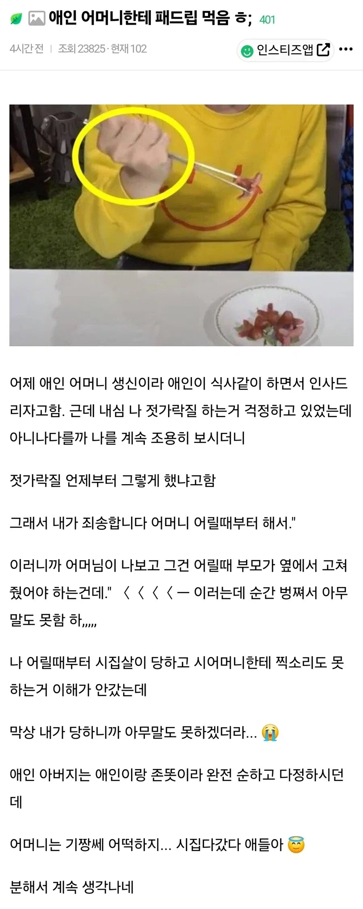

이래서 젓가락질이 중요한거야

이래서 젓가락질이 중요한거야
저 댓글 중에 코로나 백신도 안 맞고 명부 가라치면서 놀러다녔다는 얘기도 있었던 것 같은대 ㅋㅋ
젓가락질 좆같이 하는 애들이 보통 쩝쩝도 같이 함
어느 정도 나이처먹은 성인이 젓가락질을 잘 못한다는건 집안이 개차반이거나 본인이 병신이거나 둘 중 하나임.
저건 엄마가 잘 걸러준거
다른사람한테 피해주는거지 보는사람 기분 좆같은데 ㅋㅋ
사회에서 책 잡힐 일이 얼마나 많은데 저런거 하나 못고쳐서 흠 생기는거..
젓가락질 뭔 상관이냐고 할 수있는데 진짜 저런거 실제로 마주하면 존나 꼴보기 싫긴 하더라
oh......~okay~!
ㅋㅋㅋㅋㅋㅋㅋ할말하않